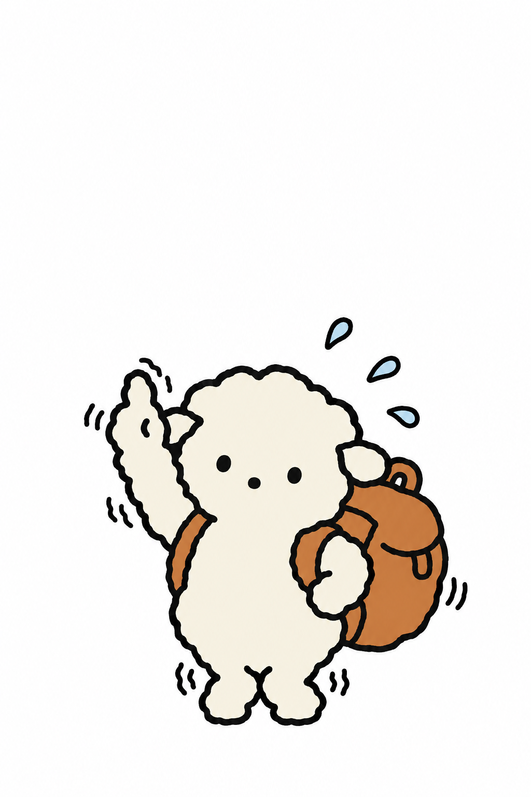
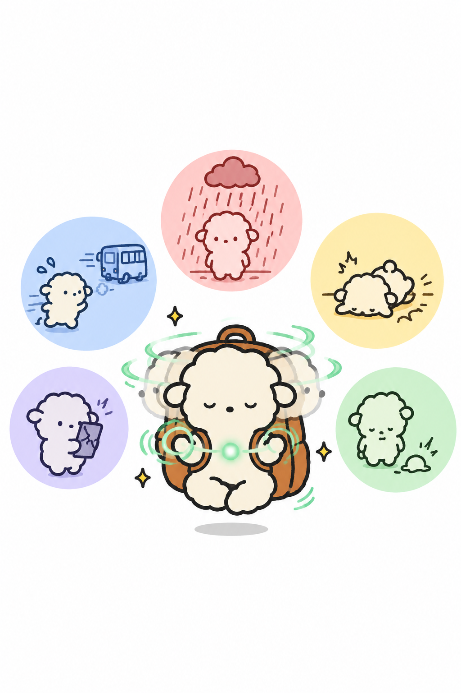
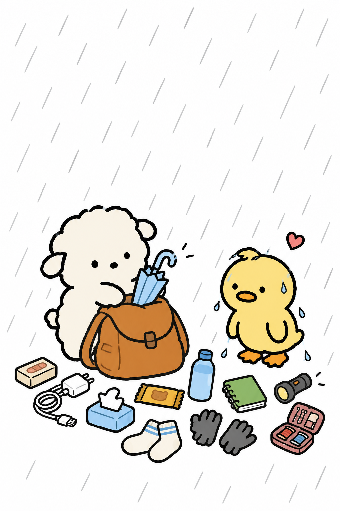
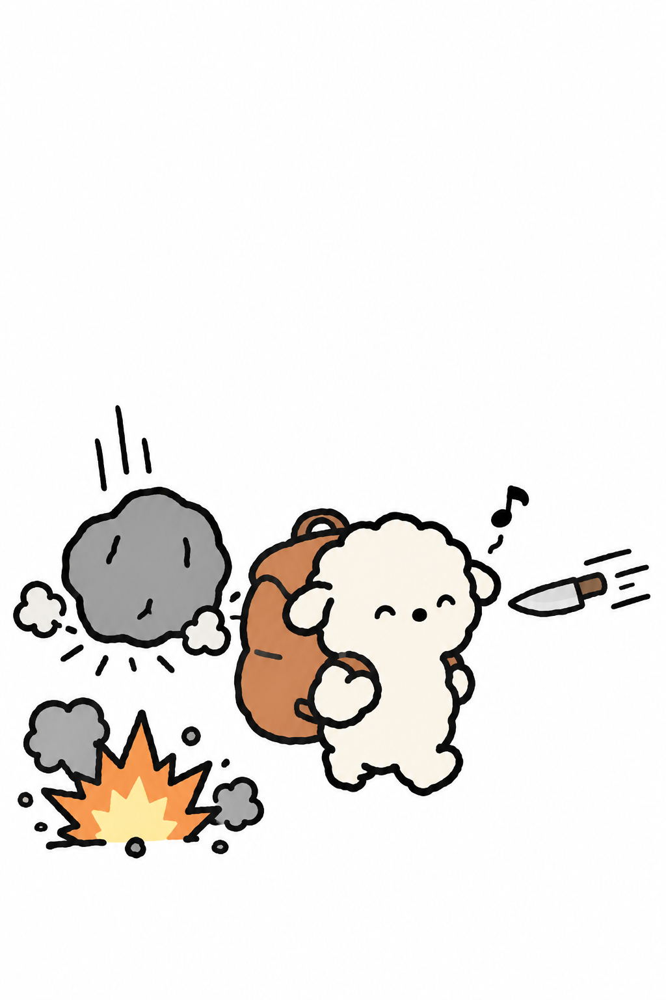
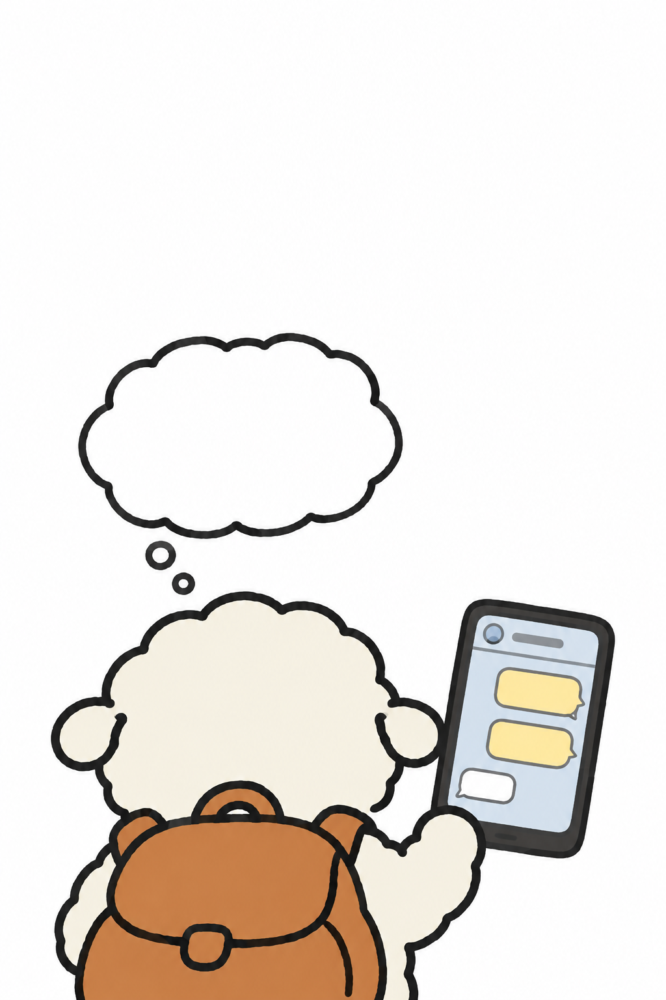
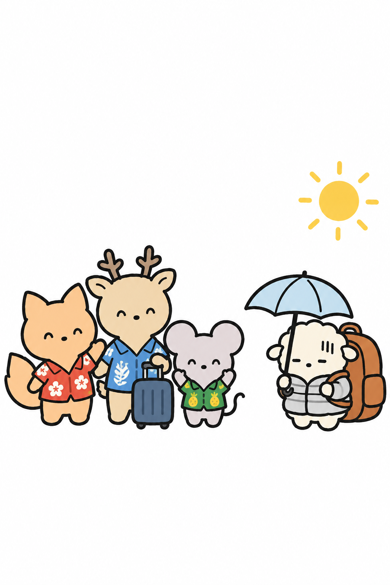
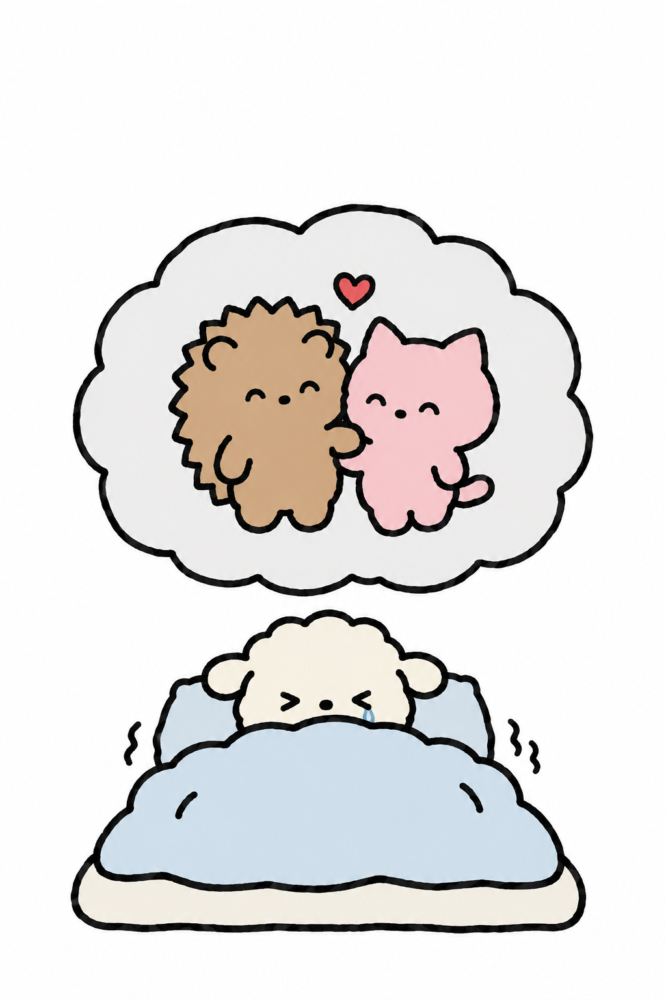
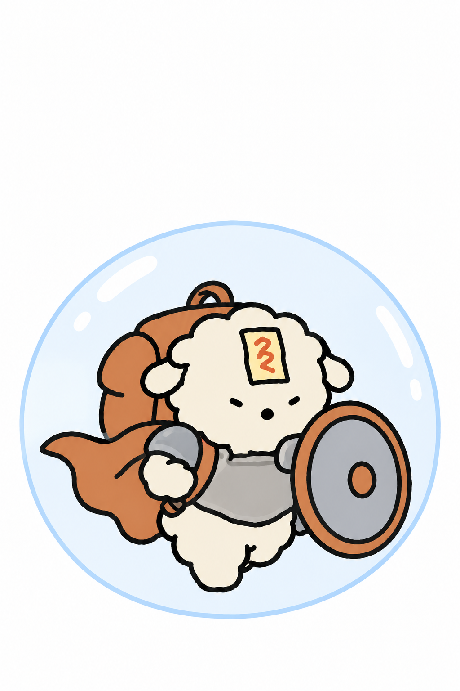

- 작은 힘에도 작은 책임은 따른다 -
일어나지 않을 일까지
미리 겪을 수 있는 초능력

우리는 아직 일어나지도 않은 일들을
상상으로 미리 겪을 수 있다.

별명이 보부상인 우리는
항상 가방 속에 아이템이 가득하고

이미 수만 개의 미래를 보고왔기 때문에
어떤 상황에도 대처를 할 수 있지만...

오지도 않을 미래들 때문에
하루에도 몇 번 씩 지옥과 천국을 오간다!
ㅇㅇ
손절하자는
뜻인가?
흑흑

때로는 걱정이 과해
준비만으로 지치기도 하고
-가족여행-

눈을 감기 전에는 망상에 시달리고
눈을 감으면 개꿈같은 악몽에 시달리지만
남친

깜짝 놀라는 하루는 싫어.
나는 항상 준비하고 있을래.
당신 옆의 초능력자를 태그해 주세요
편의점 가는 길